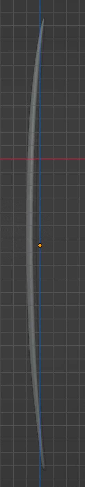
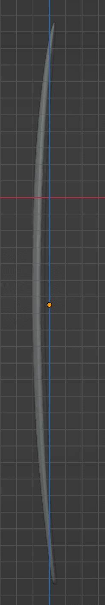
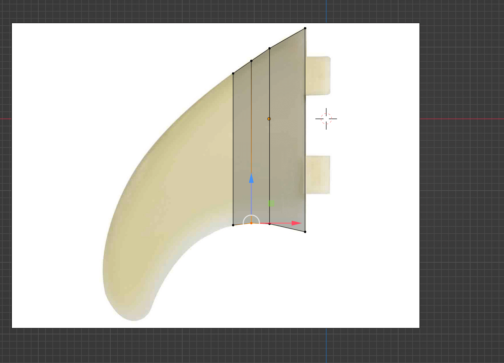
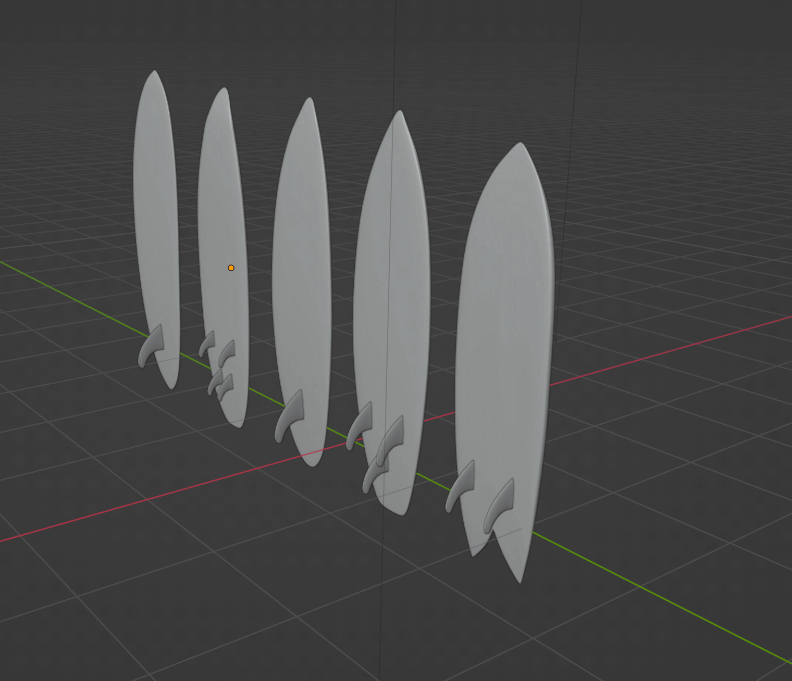
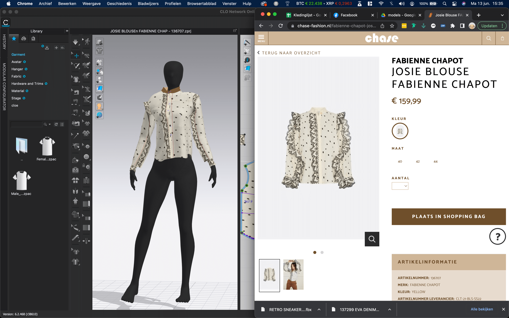
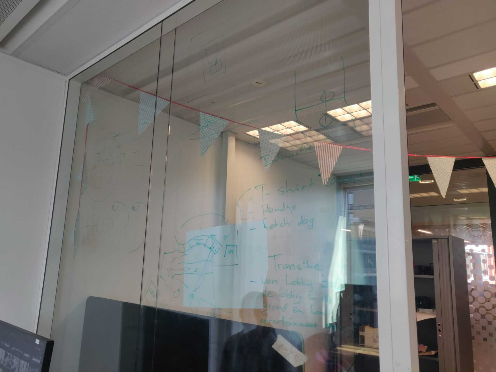

Minor XR
By Jimmy Dekker
About
My name is Jimmy Dekker. I am currently 24 years old and in the 3rd year of the Communication and Multimedia Design course. My specialty is web development. For my minor I chose XR development because I find VR/XR very interesting and I would like to learn more about the developments. In addition, I would like to learn 3D modeling and I am very curious about the VR/XR developments surrounding web development.
This page is about my personal learning path during this minor. In this I show my developments within the categories:
Assets
UX UI Design
Development
Visual Design
If you want to know more about me and my career you can find it on my personal portfolio.
Why did i choose this minor
I mainly chose this minor because i really liked virtual reality. Also one of the things i really want to know is how i can use 3d element inside a web-page, I've heard from different ways to do this but never had time to get into it. I also had quite some cases of clients that wanted some sort of 360 product viewer. Till today i always used 360 images from every angle and replaced them on user interaction. I wanna know if its also possible to do this with a 3d model. And one final reason is my intrest in 3D printing. I already have one at home for a couple of years but im still downloading all my STL files from the Internet, so i think its time to figure out how to create my own 3d models.
My current knowledge
Even tho i got my own vr headset and a 3d printer i never really had the time to learn about the development or creation of assets. One time i've tried to follow a tutorial about making a pistol whip game in unity but i got stuck at building the world and gave up. I do have development experience but i mainly want to focus on 3d modeling and how to use them for web.
Our team: Reality-Shift
Reality Shift consists of five students studying at the Amsterdam University of Applied Sciences. Our goal is to provide an attractive and functioning VR experience. To deliver good quality, Reality Shift has three important core values: quality, creativity and functionality.
Reality Shift has a diverse team, people who all have different qualities. However, our qualities have something in common, which is that we like to convert our creativity and ideas into a tangible experience.
Customer satisfaction is number one. That is why we conduct interim discussions so that your insights can be applied in the experience.
To keep our teamwork clear, we have created a webpage with an overview of the team members, project information and links to all our work.
My team role
Our team consists of 3 game developers, one creative business student and me. Because i dont know much about vr development my role will not be very specific. Mainly i will focus on learning to model in blender and i will help a bit with concepting, UI and UX. So as you maybe already guessed i will focus Mostly on the things i do not already know.
Pressure Cooker
To get the minor off to a good start, we started with a 2 week pressure cooker. In this we were introduced to the VR/XR world and we were introduced to the main tools and tricks that we will use in the coming semester.
The Pressurecooker was therefore a short individual project. Want to know more about this? check out my Pressure cooker page.
Learning Goals for this semester
To keep up with my developments within the minor, we have drawn up SMART learning objectives. With this you specify your learning objective Specific, Measurable, Achievable, Relevant and Time-Bound.
Goal 1
At the end of this semester I want to be able to independently make 3d models that can be used in VR and therefore not too many triangles. I want to get the knowledge for this learning goal from the courses of teachers, information on the internet and the experience of my classmates.
- specific: I want to learn to independently make 3d models and textures.
- Measurable: The 3d models must be usable on a quest 2 so no more than 50,000 triangles per object.
- Achievable: Through the lessons at school, my own research and the help of my project group.
- Relevant: I want to learn this because we need models for our experience and to experiment with my 3d printer.
- Time-Bound: At the end of this semester.
Goal 2
I want to learn how web vr development works through desk research and experimentation. I want to be able to load at least 1 self-made model including the textures. I would like to learn this to expand my development knowledge and to be able to display my models in a browser.
- specific: I want to learn how to use 3d (vr) in web development.
- Measurable: This learning objective has been achieved when I have been able to make a 3d world with at least 1 homemade model including textures.
- Achievable: Through desk research.
- Relevant: I want to learn this to expand my web development knowledge and to be able to show my models on a browser.
- Time-Bound: At the end of this semester.
Goal 3
I want to learn how to design a map that conveys the desired atmosphere through lessons and tests. The map must be substantiated and I want to learn this so that I know how to create beautiful environments before the end of this semester.
- specific: I want to learn how to design a map that exudes the desired atmosphere.
- Measurable: The map must be substantiated and must have been thought through.
- Achievable: Through Emma's lessons and through AB testing.
- Relevant: I want to learn this so that I can participate in the design of our vr experience.
- Time-Bound: At the end of this semester.
Assets
The assets category is mainly about developing 3d models and textures.
sprint 1
Learning goal
Shovel model
For the shovel I started looking for inspiration on the internet. After a short search I came across the following video:Blender 2.8: Modeling a Shovel. I followed this tutorial until 2:14 after which I made the rest of the shovel myself by means of extrudes, scales and merching of vertexes:

In the end I had a well-modelled scoop, unfortunately with too many triangles. I solved this by using dissolve edges on unnecessary edges:

Finally I had a shovel with only 1,974 triangles and ready to texture:
Shovel model with sand
In order to be able to shovel sand in the future, we also need a model with sand on the shovel. I did this by adding an icosphere to the scene and dividing it in half:

then I made the z axis of the sphere smaller and positioned it on the shovel in the desired way:
textures
To get a correct uv map I started by marking certain edges so that the UV map can be unwrapped in the right way:
Then I selected the model and pressed unwrap:
I then used this template to add a wood texture and a red color to the model. I did this by adding a base color based on an image:

This was the end result of my first 3d model:
Evaluation
Sprint 2
Learning goal
For the category assets I mainly spent this sprint modeling 5 different surfboards.
Surfboard inspiration
To get the right shape and different models of the surfboards, I went looking for which models there are. In the end I used this image to make the shapes.

Surfboards
I started with a 2d overlay over the surfboards and then extruded them to the right thickness. I also determined this by means of reference images. After this step I had 5 flat plates:

Of course surfboards aren't quite straight and I've warped them all a little bit:
 

Surfboard fins
For the fins I thought it would be easiest to make a model and use it in different sizes on all boards. Also at this step I started again with a reference images to get the shapes right:
Then I added all the fins to the boards and merged them into 1 object:
Surfboard uv maps
To get the correct UV maps I marked all seams in the same way as with the shovel model. I only had trouble with the fins with these models, in the end this was no problem because they had to be a solid color.
Surfboard textures
Then I searched the internet for different surfboard designs. I made a different design for each plate:


The Result:

Evaluation
Sprint 3
Learning goal
For the category assets I mainly spent this sprint Learning Clo 3d to model clothing.
Designing Clothes in Clo 3d
During the last few weeks Talitha mainly focussed on learning Clo-3d. Because she noticed that making the clothes costed more time than expected, i decited to help making some models. Because Talitha already did quite some research we decided to let her give us a smart class in designing clothing.
Before we start making the model you have to find some cutouts of clothing. For my first shirt i used the above picture. Unfortunately i forgot making screenshots so i used a basic white clo shirt as an example from this point.
As you can see the clothing exist of 2d cutouts placed and folded in a 3d enviroment. You can make these cutouts by pressing the "polygon button" and start drawing the cutouts just like the pen tool in Photoshop.
The next step is "segment sewing" all the edges of the clothing like im showing above. On the left side you can see the parts of fabric are nicely placed in the 3d enviroment. The colored are an indications og how the fabric will seem together when you press spacebar.
Adding the model
After some research i found out there are multiple ways to import a model. First i tried it with Auto convert avatar, this function resizes an exising model from Clo until it looks the same as your model. This way should be used if the mannequin should animate (because the Rig will be converted into your model).
unfortunately the previous way to import the model took quite some time. And because we aren't gonna use animations yet i decided to just inport the fbx file into Clo with the settings from above. As you can see the scale is 19.000% because for some reason the model that Hans created was really really tiny in Clo.

Now we have the mannequin and the model inside the scene.
The next ting we have to do is repositioning all the elements so they will fall correctly over the mannequin.
Live render the clothing
After the clothing is correctly placed you can start rendering by pressing space and pincing the clothing untill you're happy.
Evaluation
Sprint 4
Learning goal
For the category assets I mainly spent this sprint Learning modeling shoes and folded clothing.
Shoe modeling 2d start
To get this model started on the right foot, I searched the internet for tutorials about designing shoes in Blender. After watching a few videos: Concept Shoe Modeling in Blender 2.92 seemed to me the most appropriate tutorial. I followed this until about 40:00 after which I did some things differently myself and did the rest of the process with my own knowledge and the help of teachers and other students.

I started with a cube where I mirrored 2 faces. Because of this I only had to keep an eye on one side and the other side did exactly the same transformations.

Then I added a reference photo of the side of the shoe I wanted to make (the reference photo is in the middle between the 2 mirrored boxes). I started to expand and move the compartments by means of extrudes on the bevels until I had imitated the side of the shoe in a logical way.

Because the reference photo was not perfectly taken from the side and because shoes always bulge a bit in the middle, I gave the lines at the top a little bit of slack in the front.

As soon as I was satisfied with the shape I looked up another reference photo but from the top. This allowed me to put the two sides at the correct distance from each other.
From 2d to 3d shoe

The next step was to select the outer lines and those merch in the middle (extrude -> merch the middle vertexes).

Now I could recreate the shape of the top.

I did this by putting my viewport on the z-axis and making the model semi transparent. Now it was a matter of putting the vertexes in the right place.

When I was satisfied with the shape, I opened up the opening of the shoe by removing the panels at the entrance. As you can see, the shoe now looks very flat. I solved this with Solidify, as you can see in the next image, this causes one layer to become a lot thicker. You can adjust this thickness yourself.
sole, shoe lip and labels

The "sock" of the shoe was now in the correct shape so I could start making the extra parts. This was now easiest to do by copying, duplicating and extruding certain parts of the shoe. So for the lip I duplicated the top 4 panels (shift + D) and pulled it loose from the "sock" object (p -> separate). I also gave this lip thickness again by applying Solidify.


I detached the sole from the rest of the model in the same way and then pulled it down with extrude.


After this it was again a matter of putting the vertices in the right place using the top and side reference images.
Polish the model
After I got the overall shape of the shoe right, I made the surface more beautiful with the multiplier. Now the shoe looks great, but I was left with a lot of vertices.

To solve this problem I started by semi-manually removing all the inner verteces so that the inside is completely hollow.

Then I also removed the top layer of the sole and started removing all invisible lines from the inside.

After this I attached the sole and the "sock" of the shoe together by merching the vertices.

The next step was to remove unnecessary lines in the model. I mainly did this by selecting and removing complete loops of lines (option + click).

In the meantime I have also added the seams to make the UV map (these are the red lines). Unfortunately I forgot to take pictures of that this time. Would you like to know how this works? then view Textures for the shovel.

I ended up with a small 1,425 vertices.
Uv mapping and texturing

The UV map finally looked like this. I later changed the size and location of certain elements (you can see this in the following image).

Then I made the lines, colors, logos and shapes in photoshop and kept testing these on the model in blender.


Final result:

Evaluation
Sprint 5
Learning goal
For this spint i didn't make many new models but added some improvements to the current models.
Issues with the current models
When we started using the Shoe models i notced a few small issues with the shoes that i wanted to improve. First of all, one of the shoes has some kind of weird inverted texture (only in Unity not in Blender), second of all the other shoe is invisible from the inside, and the last thing came up during the portfolio talks in school but there was some improvement needed for the uv map.
Fixing inverted texture
For the first issue i tool some time to search for the issue on Google. After a while i found a simular issue on: blenderartists.org. To fix this issue i just had to select the inverted model in edit mode and press (option + n) and click Rectangulate Outside. This function rotates the faces of the object to the outside.
Fixing transparent inside
A simple solution for me to fix the invisible inside was to fill up the hole. Unfortunately i couldn't find a way to texture the inside differently without making it much more heavy. So i desited to just fill up the hole with one face and texture it black. I selected the opening with (option + click), then extruded the edge and scaled it a bit smaller like the picture above.
The next step was mercing the verticies in the middle. and move them down.
This way i only added 2 verticies and the holes are closed.
The next step was adding the new added faced to the uv map, i did this by only selecting the new faces, unwrap them and move them to the same space as the sole.
At the end i finished up with 2 nice models that are not transparent or inverted.
Improving the Uv maps
In the previous edits i ended up with the uv map, so this seemd like a great time to improve those to.
During one of the talks with Alexander (our model teacher), he told me that there were some improvements possible with the uv maps. Currently i used way to much space for a solid black part and not enough space for the detailed part of the shoe (like the top part).
So i started repositioning some specific parts of the shoe till the layout made more sence in space use.
This is the uv map i ended up with, as you can see i made more use of the space. Now the sock of the shoe and the label can be quite a bit bigger.
Result:
More clo clothing
Last sprint i mainly focussed on the modeling of the shoes and folded states of the clothing. Now it really was time to finish the clo models. I ended last time with rendering the clothing the right way. Now its time to create the UV-Map.
I did this to switch to the UV EDITOR and starten laying al the parts out in the first square. At first i didn't know this was needed but after exporting the first time i noticed the model had 4 UV maps. So after a while of messing arround, one of my teachers (Emma) explained me that this was necessary.
I exported the object with the previous settings (i used this screenshot for all future exports so i know the settings are right).
The Next thing i did was importing the FBX file into blender.
I checked if the model was right (many times this was not the case). So i had to reopen Clo-3d again and do manny manny adjustments.
Making the textures
Eventually i got the model right and started creating the textures. This model was quite straight forward. Just adding some fabric in the right color.
meanwhile i rechecked the model if everything was still looking good.
Then i added the letters on the shirt with some filters to blend it in nicely.
Result
I was really happy with the result. I think the tshirt really looks like the one from the website.
The next step was creating a extra texture to the folded version. I just basicly created one texture with only the base texture. I think this would do the job and give users the idea that they are holding a folded version of the clothing.
Then i repeated the whole proces again and made the brown version of the shirt. also for this shirt i was really happy with the end result.
More dificult models
The next model i started working on these pants. Talitha did already do the cutouts for this one so i continued with nicely laying out de 2D elements arround the 3D mannequin.
I started thoing this by moving and rotating the elements in the right place.
When the parts where in the right place, i started exporting but i found out that the model was 1.600.000 vertices.
After a long time of searching i found out the stiches where also rendered as 3d objects. Containing 160+ verticies per stitch.
So i removed all stiches from the clothing (i also tried exporting them as texture but for some reason they didn't change).
I also made this Fanienne Chapot blouse. This one was a lot more dificult to make because of the loose pieces.
Evaluation
UX-UI Design
The UX-UI design category is mainly about designing specific interactions between the user and the vr experience.
sprint 1
Learning goal
During this sprint I was mainly busy brainstorming and developing our idea through storyboards.
Brainstorm
We did the brainstom with the entire team, we did this by means of the crazy 8. After that we worked out all the ideas further and drew a concept on the glass wall.
Storyboard 1
Then I started working on the next 2 storyboards.

I did't really wanted to spend to much time on the storyboard (so many other intresting things to learn). So at first i tried to make the story board in an online generator. Unfortunately i was not really happy with the result (i think i can't really get my imagination going if i use remplates). So i desited to draw another one myself.
Storyboard 2 (final concept)

- De gebruiker zet vanuit de winkel of elke andere mogelijke locatie de VR headset op en komt in de in de Chase VR Lobby.
- De lobby geeft een gevoel van vernieuwing en daagt de gebruiker uit om de omgeving te gaan ontdekken.
- De gebruiker loopt rond en ziet dat de lobby aangesloten zit aan verschillende onderdelen van de ervaring. Bij het eerste onderdeel die hij/zij ziet staat een muur bestaande uit blok etalages voor de verschillende collecties.
- De collectie blok etalages kunnen d.m.v. een interactie worden uitgekozen. De gekozen blok etalage kan vervolgens worden geplaatst in een lege template blok. Zo verandert het grote lege template blok in de gekozen collectie.
- Als het gekozen blok is geplaatst starten de paspoppen uit het collectie blok met lopen over de catwalk die voor de muur staat. De paspoppen dragen dan de kleding uit de gekozen collectie.
- De paspoppen die over de catwalk lopen kunnen met een knop worden stilgezet. Zo kan de gebruiker per paspop beter de kleding bekijken die de paspop aan heeft. Als de gebruiker een kledingstuk wilt selecteren, is dit mogelijk door met dezelfde interactie als hiervoor. Het geselecteerde kledingstuk kan op een eigen paspop worden geplaatst. Of direct in het digitale mand blok worden gedaan.
- De gebruiker is zo tevreden met de outfit op de paspop / in het mand blok dat hij/zij besluit om de outfit te kopen. Dit kan de klant doen door het mand blok met de interactie te plaatsen in de virtuele versie van de kassa.
- De virtuele kassa zit samen met een virtuele versie van het Chase Café. Zo krijgt de klant al een indruk van de uitstraling en sfeer van de Chase Concept Store.
- Verder in de lobby ziet de gebruiker de mogelijkheid om sfeer gerelateerd entertainment te beleven en eventueel promoties te winnen.
- Na het spelen van een aantal spelletjes besluit de gebruiker dat het tijd is voor de volgende gebruiker en zet de headset af. Een paar minuten later komt er een mailtje binnen met (als dat mogelijk is) een linkje naar de webshop of de individuele producten van Chase die in de virtuele winkelmand zaten.
Evaluation
sprint 2
Learning goal
for this sprint I wanted to find out at which distances texts and objects can still be read well in vr.
distance checker
Because in our experience we want to display the block windows in different sizes: medium in the block wall, small when you pick it up and large when it is active on the catwalk. I thought it would be useful to do a little experiment and test at what distances some block sizes were too big or too small. I made this in a separate scene in unity.

model
To start with I modified the block model a bit with letters and scaled it in 6 different sizes.

tests
For the test, we put several people in this scene and instructed them to say the color and distance when the text between the green and red lines is legible.
result
For some reason the results are blocked by google, im still in contact with the service team trying to recover them.

Evaluation
Development
The development category is mainly about building the vr experience.
sprint 1
Learning goal
For development I have been busy recording the animation for the mannequin, setting up a webvr environment, making the team website and uploading my work on the github branch.
website workshop
In order to keep track of our personal development within this project, we need to maintain this portfolio website. To help the rest of the team with the construction of the website, I offered to give a workshop for a day on the basic design of a website. We did this using HTML CSS and JS. In addition, I have forwarded a number of links that can help them during the further building of the website.

By means of bright colors I can easily explain how the cotnainers are put together and how the positioning of the elements works.

Some of the sites I've provided and treated as a resource are:
HTML element overview
Meta viewport tagg
Media query's
Flexboxes
Record mannequin animation
To be able to animate the clothes on the mannequins and to make the mannequins walk on the catwalk, we need animations that we can rigg. This is what we are going to do with the motion tracking suit from Perception Neuron We used the quickstart guide for the installation and donning of the suit:

And then figured out the program itself. In the end we ended up with a number of animations including:
During the installation we learned that all electronic devices had to be away from the suit. If we didn't, certain sensors wouldn't work.
Web vr research
One of my learning goals was to learn web vr, because I can't do that within our project I decided to use it with this portfolio.
To start with, I went looking for javascript libraries that help to create a vr website.
The main ones are:
React VR
A-frame
and
three.js.
In the end I chose A-Frame because I found out that it comes with a very handy inspector in which you can design the world live. To install and use the three.js I used the following tutorial:
Aframe Webvr - VR Development Part 1 - Setting Up.
To learn how the inspector and environment builder works I used the following video:
Easy Environment in A-Frame (beginner tutorial)
During development I found out that the vr function was not working. After some research it turned out that this was because WebGL is not yet supported on IOS.
Do you want to see how the site works? Then check out the code on Github:
View on github
team website
To keep the progress of our team project and all the links in one place, I made a Reality shift page. I made the site with HTML, CSS and JS. For the particle animation I used: particle.js.
Check out Reality-shift.nl
github with sourcetree
For the development of our project we use github. I have used Github itself before, but to learn something new I started using Sourcetree this time. Thomas taught me and Thalita how this works. Not to forget, I've recorded a video of the process:
Evaluation
sprint 2
Learning goal
In terms of development, I was mainly busy fixing the webvr experience during this sprint. And making the animation of the distance check.
Rotate around objects
Because I found out while making the site that the VR function doesn't work on IOS yet, I decided to only make the world visible from a 3th person perspective. The idea is that the camera can rotate around the objects. I managed this with the following code:
Change camera position on scroll
After the camera was added i wanted to change the camera position based on the scrollposition of the site. I fixed this by writing the following code:
this code basicly checks the scrollposition of the container element. If the container element is almost in view the camera position gets updated within the setAtribute.
Result:
Distance checker animation
To get the blocks closer and closer to the user, I made an animation in Unity where the blocks jump every 10 seconds. The animation timeline looked like this:

As you can see I do this by changing the x position.
Evaluation
sprint 4
Learning goal
hier komt text over dingen die ik in sprint 3 heb gedaan
textures on web models
Now the system was fully running it was time to add the textures on the models. At first i started to look for a solution at aframe.io. Unfortunately i didn't really got my awnser on this page so i started googling. Eventually i found this page: stemkoski.github.io. I checked the "image texture" example and inspected the page:

So basicly i had to add a img to the assets and put the id of it inside the material attribute. So thats what i did:
My solution

As you can see, i added the #scheptexture to the a-assets and to the material of de a-enrity. Basicly this did the job, that was a lot faster than i anticipated. If you wanna see the result click here.
Evaluation
Visual Design
The visual category mainly concerns the appearance of the vr experience, such as the environment design.
sprint 1
Learning goal
During this sprint I have mainly been working on the basic design of the environment, which includes:
colors
Because we haven't had time to visit on location yet, we have asked for a load of photos on which we can base the colors. We have had a number of images and have divided them into 5 different categories:
beach colors:
cafe colors:
outside store colors:

inside store colors:
inside green accents:

To make these color palettes I took the main colors in photoshop and processed them with coolors.co.
moodboard catwalk
To start designing the environment, we first work out the catwalk. This was a logical order for us because the catwalk is the most important part of our experience and we wanted it to be central to the layout. During the brainstorming session with Hans, we first started collecting images:
environment designs
When designing the environment (this mainly concerned a logical layout for our concept) I divided our concept into a number of parts. First I started with random layouts, but I soon found out that this didn't quite work. That's why I signed up for the environment design class. Because our preference for the catwalk was already moving more towards something circular, I was advised to experiment with circular environment design. This way I could organize the environment in a more logical way and part of the experience is always visible to the user. To start with, I made 3 sketches with the elements scattered in a different way but with the catwalk in the center:


environment prototypes
Then I started working out these designs in Blender so that we could get a better picture of the environment:

Evaluation
sprint 3
Learning goal
hier komt tekst voor sprint 3
Assets hunt on location
To get a better idea of what the Chase store looks like, we went to Kijkduin with the whole group and took pictures of the store and the surrounding area. We also checked for textures and specific models for inside the store.
I will show a few images, 360 images and lidar scans we made, if you want to see all the images we collected check out our drive.
Lidar scans
We also wanted to test some new functions of the Iphone 13 and made a few Lidar scans for inspiration and maybe to have a headstart when we want to model some of the elements.

These are some of the scans we made, its quite funny to see the details on the table. This way of scanning assets is fun to do but the ammount of verticies is way too high.

360 images
I also brought a 360 camera, so we could shoot some nice enviroment pictures. I also wanted to see if we could use some of these as a skybox.

This an example of one of the pictures we could use to get inspiration.

This an example of one of the pictures we could use for a skybox.
All Images on our Drive
Evaluation
Teamwork
To crank up the team spirit we also decided to do some of the assignments together. Starting with concepting, Testing days (also at Chase at Kijkduin), Asset hunts and presentations.
Sprint reviews
another thing we did every sprint was a sprint review. For me this was something new and it seemd kind of useless at the beginning. But after some sprints i saw these days as a nice way for sharing usefull feedback or concerns.


So basicly we had 4 categories: TOP, TIP, PUZZLE and RISKS. Then we all took some time to write down as many things you could come up with. Folowing by talking about it and ordering them by importantness (we determine that by sticking 5 stickers each).
Then every member took one of the 5 tasks to monitor so we could check if we improved or not.
Test and foto days
I already told you about the asset hunt day, but we also did a testing day. We organized this with some other students that where also doing some assignment for Chase. Unfortunately i can't find the results anymore but i do have some nice pictures and video's to show what we did:


So we made 2 spots where we could test our experience. At the same time the students from the other group where collecting awnsers for our survey.
We got some really nice results and we got some insights we would't get from the usertests at school (mainly from the older people).
Clo moddeling
For clo i mainly worked together with Talitha. She focussed on it for the first 3 sprints and then we noticed that we needed more hands to finish some clothing. There was still not really a proces for making the clothing so i took some time to re-organize the file structure and make a list with clothing we wanted to make.

So i just folowed these 6 folders: first saving the clo files (just in case), then export the fbx file to folder 2 and texture to folder 4, then imported the fbx into blender and created the texture in photoshop, then created the folded texture and as the last step collecting the fbx, texture and folded texture and updating it to the drive.

So i made this list so we would know who was working on what model and so we could see the progress of the clothing.
Minor Evaluation
Overacting Learning goals
Goal 1
At the end of this semester I want to be able to independently make 3d models that can be used in VR and therefore not too many triangles. I want to get the knowledge for this learning goal from the courses of teachers, information on the internet and the experience of my classmates.
- specific: I want to learn to independently make 3d models and textures.
- Measurable: The 3d models must be usable on a quest 2 so no more than 50,000 triangles per object.
- Achievable: Through the lessons at school, my own research and the help of my project group.
- Relevant: I want to learn this because we need models for our experience and to experiment with my 3d printer.
- Time-Bound: At the end of this semester.
Result Goal 1
I really think i passed on this learning goal. Im able to create my own 3d models now and even tried 3d printing my own models. A few weeks ago i needed a lid for my terarium, normaly i would search the internet but this time i was able to design and print my own. That was exactly what i wanted to be able to.
Goal 2
I want to learn how web vr development works through desk research and experimentation. I want to be able to load at least 1 self-made model including the textures. I would like to learn this to expand my development knowledge and to be able to display my models in a browser.
- specific: I want to learn how to use 3d (vr) in web development.
- Measurable: This learning objective has been achieved when I have been able to make a 3d world with at least 1 homemade model including textures.
- Achievable: Through desk research.
- Relevant: I want to learn this to expand my web development knowledge and to be able to show my models on a browser.
- Time-Bound: At the end of this semester.
Result Goal 2
Also this learning goal worked out great. Because we didn't really used web vr in our porject, i took some time to make sure i could reach this goal by adding the 3d viewer to my portfolio page. I've learnd how to make use of different camera positions and was able to add multiple models including the textures. In the future i might reuse this knowledge if i need any 3d animations or interactions.
Goal 3
I want to learn how to design a map that conveys the desired atmosphere through lessons and tests. The map must be substantiated and I want to learn this so that I know how to create beautiful environments before the end of this semester.
- specific: I want to learn how to design a map that exudes the desired atmosphere.
- Measurable: The map must be substantiated and must have been thought through.
- Achievable: Through Emma's lessons and through AB testing.
- Relevant: I want to learn this so that I can participate in the design of our vr experience.
- Time-Bound: At the end of this semester.
Result Goal 3
This goal is kinda done. I did worked with Hans on the enviroment but after 3 designs, Hans already made 8 of them. I also didn't really liked it because it just took me way to much time, that i prefered spending on moddeling objects instead of enviroments. So Hans eventually continued creating the admosphere.
My minor experience
I really liked the minor. at first i thought one semester would be a bit long to focus on one subject but the amount of subjects to learn kept the minor very interesting. I am quite happy about the percentage that i spend on each subject. In the beginning i thought i would work more in development but after the pressurecooker i knew i wanted to focus more on assets and web vr (and thats what i did). For UX-UI Design and visual design i Mostly helped teammates but didn't really go into it. I did that on purpose because i already did this every other project and now it felt like a chance to explore some new things.
What would i do different
I think the most dificult thing for me was that i was not familiar with a normal game developers proces. This ment for me that i would learn a new way of working but also ment i had to get used to the flow. Because of this i found it dificult to have an overview of all the tings our team was doing (normaly i alwais have that). Because of this we could have been more efficient if we would have made the finel clo model a lot earlier. This time the model changed multiple times and because of that we had to redo some models 3 times. I also found out that Chase did send us some quite difficult clothing. And like that we also had some other small things where should keep in mind for future projects. But overall i think we did a lot of nice things.
What would i do the same
Because of that i also wanted to tell you what i would do the same. I think the overall Communication between our teammembers was extremely good. I think everyone was very willing to learn (even tho we had sometimes very different backgrounds). I also think the way we made our workspace was very nice. It felt very much like a real company when we had our own website, this also made all our stuff like github, google drive, trello and Miro very easy to find.
We also had a few "training" days where teammates would teach eachother some of their skills. So at the end this minor was a succes and i learned alot from it.